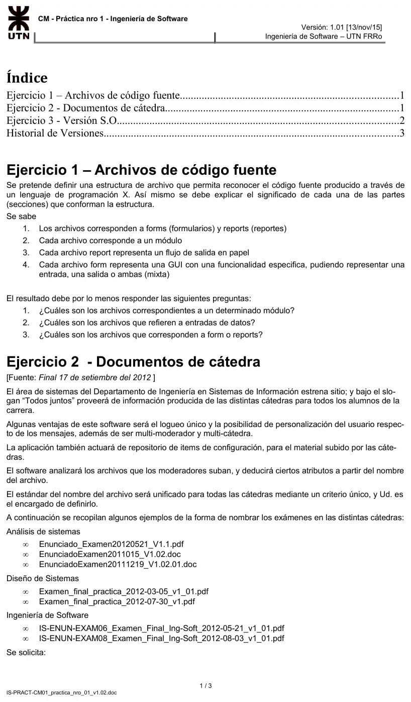
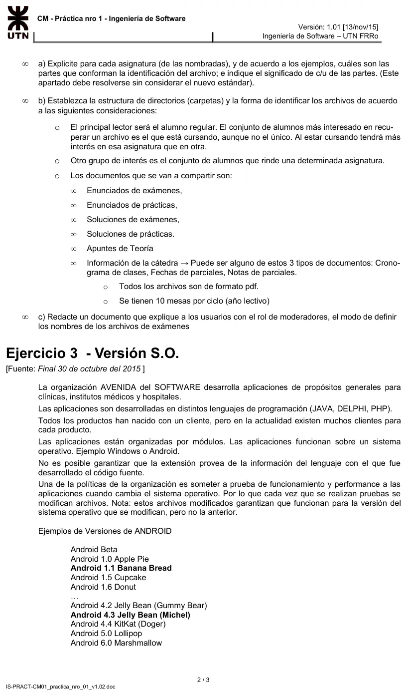
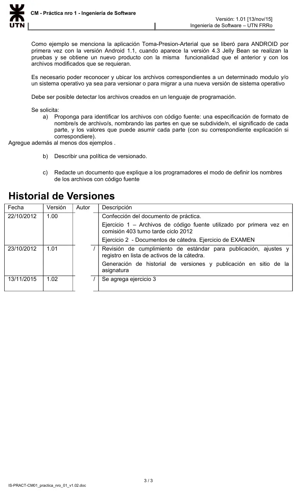

Práctica de la cátedra: identificación en CM
Parcial de aprobación directa
Enunciado






Propuesta de respuesta
Respuesta no verificada. La propuso Luta Studios con inteligencia artificial y ningún docente la revisó. Puede tener errores.
Identificar es la primera actividad de CM, con identificadores únicos y una estructura (CM SP 1.1). El nombre tiene que dejar ubicar cada elemento sin abrirlo y responder las preguntas que se le van a hacer.
Ejercicio 1, archivos de código fuente
<MOD>-<TIPO>-<FLUJO>-<Nombre>.<ext>| Parte | Significado | Valores |
|---|---|---|
| MOD | Módulo al que pertenece el archivo | Sigla de 3 letras, por ejemplo VEN para Ventas o CLI para Clientes |
| TIPO | Form o report | FRM o RPT |
| FLUJO | Qué representa | E entrada, S salida, M mixta. Un report siempre es S, porque es un flujo de salida en papel |
| Nombre | Funcionalidad del archivo | Palabras juntas, cada una con mayúscula, sin espacios ni acentos |
| ext | Extensión del lenguaje X | La que use el lenguaje |
Por ejemplo, VEN-FRM-E-AltaPedido, VEN-RPT-S-ListadoFacturas y CLI-FRM-M-ConsultaCliente, cada uno con la extensión del lenguaje.
| Pregunta | Cómo se responde |
|---|---|
| Archivos de un módulo | Los que empiezan con su sigla, como VEN-* |
| Archivos de entrada de datos | Los forms de entrada y los mixtos, *-FRM-E-* y *-FRM-M-* |
| Forms o reports | Por la segunda parte, *-FRM-* o *-RPT-* |
Ejercicio 2, documentos de cátedra
a. Partes de cada asignatura.
| Asignatura | Partes | Problemas |
|---|---|---|
| Análisis de Sistemas | Tipo de documento, Enunciado y Examen. Fecha AAAAMMDD. Versión con V. Extensión | El separador entre Enunciado y Examen está en un archivo y en los otros no. «2011015» tiene 7 dígitos y no se sabe qué fecha es. La versión tiene dos o tres números, y mezcla pdf y doc |
| Diseño de Sistemas | Tipo de documento, Examen. Instancia, final. Parte, práctica. Fecha AAAA-MM-DD. Versión con v y los números separados por guion bajo | No dice si es enunciado o solución. Una versión es v1_01 y la otra v1, sin número menor |
| Ingeniería de Software | Asignatura, IS. Tipo, ENUN. Examen y número correlativo, EXAM06. Descripción, Examen_Final_Ing-Soft. Fecha AAAA-MM-DD. Versión v1_01 | Es la más completa y es pareja. Repite la asignatura y el examen en la descripción |
b. Directorios y nombre. El alumno que cursa busca primero por asignatura y después por tipo de material. El que rinde busca la mesa. Por eso la asignatura va arriba y las mesas tienen su carpeta.
/<ASIG> Sigla de la asignatura, por ejemplo IS
/<AAAA> Ciclo lectivo
/Teoria Apuntes de teoría
/Practicas Enunciados y soluciones de prácticas
/Parciales Enunciados y soluciones de parciales
/Mesas
/M01 … /M10 Enunciados y soluciones de los exámenes de cada mesa
/Catedra Cronograma, fechas y notas de parciales<ASIG>-<DOC>-<NUM>_<AAAA-MM-DD>_v<M>_<mm>.pdf| Parte | Significado | Valores |
|---|---|---|
| ASIG | Asignatura | AS, DS, IS y así para cada una |
| DOC | Tipo de documento | EEX enunciado de examen, SEX solución de examen, EPR enunciado de práctica, SPR solución de práctica, APU apunte de teoría, CRO cronograma de clases, FPA fechas de parciales, NPA notas de parciales |
| NUM | A qué corresponde | M01 a M10 para la mesa, P1 o P2 para el parcial, 01 en adelante para la práctica o la unidad del apunte, 00 si no aplica |
| AAAA-MM-DD | Fecha del examen o de publicación | Siempre con 4, 2 y 2 dígitos |
| v M_mm | Versión | El mayor y el menor, con el menor en dos dígitos |
Por ejemplo, IS-EEX-M06_2012-05-21_v1_00.pdf es el enunciado del examen de la sexta mesa de IS, y IS-SEX-M06_2012-05-21_v1_01.pdf su solución corregida una vez. DS-EPR-03_2012-04-10_v1_00.pdf es la práctica 3 de DS y AS-NPA-P1_2012-06-01_v1_00.pdf son las notas del primer parcial de AS. El sistema deduce del nombre la asignatura, el tipo, la mesa o el parcial, la fecha y la versión.
c. Documento para moderadores.
Cómo nombrar los archivos de exámenes
- Guardá el archivo en pdf.
- Empezá por la sigla de tu asignatura, en mayúsculas.
- Seguí con EEX si es el enunciado o SEX si es la solución.
- Poné el examen, M01 a M10 para una mesa o P1 y P2 para un parcial.
- Agregá la fecha del examen como AAAA-MM-DD.
- Terminá con la versión. La primera es v1_00. Si corregís el archivo, sube el número menor, v1_01. Si lo rehacés entero, sube el mayor y el menor vuelve a 00, v2_00.
- Separá las tres primeras partes con guion y el resto con guion bajo. Nada de espacios ni acentos.
Por ejemplo,
IS-EEX-M06_2012-05-21_v1_00.pdf. Subilo a la carpeta de la mesa,/IS/2012/Mesas/M06.
Ejercicio 3, versión del sistema operativo
a. Nombre de los archivos con código fuente.
<PROD>-<MOD>-<SO><M>_<m>-<LEN>-<Nombre>.<ext>| Parte | Significado | Valores |
|---|---|---|
| PROD | Producto | Sigla de 3 letras, por ejemplo TPA para Toma-Presion-Arterial |
| MOD | Módulo | Sigla de 3 letras, por ejemplo MED para Mediciones |
| SO y M_m | Sistema operativo y versión para la que se probó el archivo | AND o WIN, y la versión con guion bajo, como AND1_1 o AND4_3. Así el punto queda solo para la extensión |
| LEN | Lenguaje | JAV, DEL o PHP. Va en el nombre porque la extensión no garantiza el lenguaje |
| Nombre | Funcionalidad del archivo | Palabras juntas, cada una con mayúscula |
| ext | Extensión | La del lenguaje |
Cuando se migra, solo los archivos modificados toman la versión nueva. Los que pasaron las pruebas sin cambios siguen con la suya.
| Archivo | Qué es |
|---|---|
TPA-MED-AND1_1-JAV-TomarPresion.java | El original, de Android 1.1 |
TPA-MED-AND4_3-JAV-TomarPresion.java | El mismo, modificado para Android 4.3. No reemplaza al anterior, porque no garantiza Android 1.1 |
TPA-INF-AND1_1-JAV-HistorialMediciones.java | No cambió, así que entra en los dos productos |
Los archivos de un módulo se buscan con TPA-MED-*, los de una versión del sistema con *-AND4_3-* y los de un lenguaje con *-JAV-*. El producto para Android 4.3 se arma con la versión más alta de cada archivo que no pase de 4.3.
b. Política de versionado.
| Pregunta | Política |
|---|---|
| Cómo empieza | Cada producto empieza en 1.0 para cada sistema operativo, como TPA para Android 1.1, v1.0 |
| Cuándo cambia el número mayor | Cuando cambia la funcionalidad |
| Cuándo cambia el menor | Cuando se corrige un error sin cambiar la funcionalidad |
| Qué pasa con el otro número | Si sube el mayor, el menor vuelve a 0 |
| Qué pasa al migrar a otro sistema | Nace un producto nuevo, TPA para Android 4.3, v1.0, con la misma funcionalidad. El de la versión anterior sigue con su numeración |
| Cambios simultáneos | Un archivo lo modifica un programador a la vez. Lo reserva en el sistema de CM y lo libera al terminar |
Cada release es una línea base de producto, con la lista de archivos que la forman.
c. Documento para programadores.
Cómo nombrar un archivo con código fuente
- Empezá por la sigla del producto y la del módulo, como
TPA-MED.- Agregá el sistema operativo y la versión en la que lo probaste, con guion bajo, como
AND4_3.- Agregá el lenguaje, JAV, DEL o PHP, aunque la extensión parezca decirlo.
- Terminá con el nombre de la funcionalidad, con las palabras juntas y cada una con mayúscula, y la extensión.
- Si modificás un archivo para una versión nueva del sistema, no lo pises. Creá uno nuevo con la versión nueva en el nombre. El anterior sigue siendo el de la versión vieja.
- Si el archivo pasó las pruebas sin cambios, dejale el nombre que tiene.
Por ejemplo,
TPA-MED-AND4_3-JAV-TomarPresion.java.
Respuesta no verificada. Puede tener errores.
Se armó con la página Aprobación directa, secciones Gestión de configuración CM, Actividades y Versionado.
Quedó en duda: Los formatos de nombre, las siglas y la estructura de carpetas son una propuesta y hay otras válidas. El ejercicio 2 no dice si los exámenes son solo finales, así que se agregan los parciales.
¿Cómo te fue?
Marcá cada tema del examen.
- CMGestión de configuración CM, en Aprobación directa